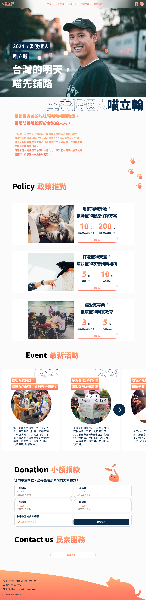
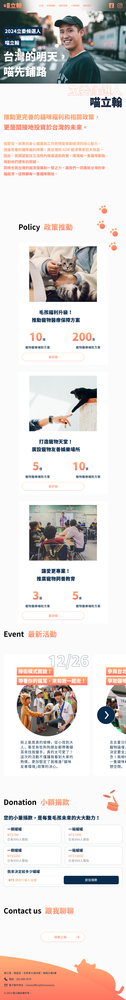
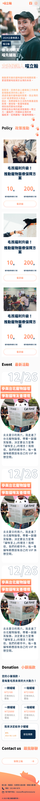
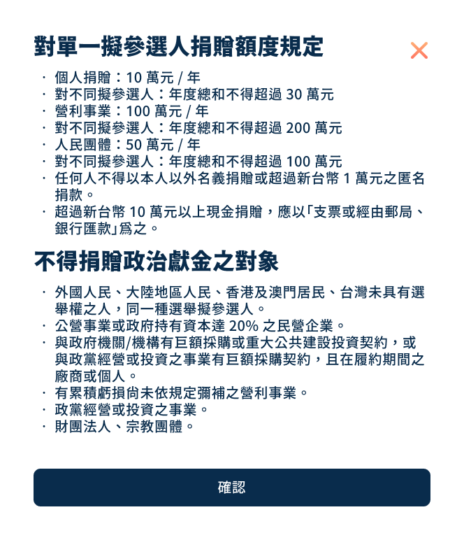
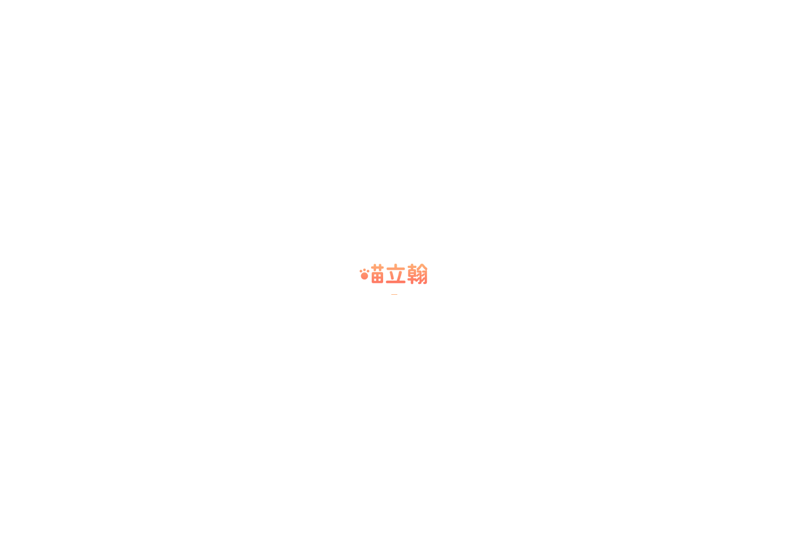

一頁式競選官網，用敘事結構帶領選民從認識候選人到付諸行動 — 完整 RWD 三斷點，確保每個螢幕都能被說服。
基於保密協議，本頁僅展示部分畫面與流程，不包含完整介面內容。
| 痛點 | 設計解法 |
|---|---|
| 政治人物形象難以親民化 | 大面積候選人生活照 + 口語化標語 |
| 政見資訊量大，難以快速掌握 | 數字 + 圖示重點化呈現，降低閱讀門檻 |
| 小額捐款流程繁瑣 | 捐款彈窗 + 預設金額選項，最少步驟完成 |
| 不同裝置瀏覽體驗差異大 | 完整 RWD 三斷點設計 |
| 選民不知如何參與 | Contact us 區塊整合聯絡方式 |




| 設計元素 | 選擇 | 原因 |
|---|---|---|
| 主色調 | 橘色（活力橙） | 代表改革、創新，跳脫傳統藍/綠陣營框架 |
| 數字呈現 | 超大數字 + 橘色強調 | 比長篇文字更有衝擊力，搭配品牌色抓住視線 |
| RWD 策略 | 三斷點：1440 / 834 / 360 | 覆蓋主流裝置，桌面雙欄→平板微調→手機單欄 |
| Hero 區塊 | 人物照佔滿上方 | 政治競選核心是「人」，大面積照片建立情感連結 |
| 頁面結構 | 單頁式長捲動 | 線性敘事最符合說服邏輯 |
